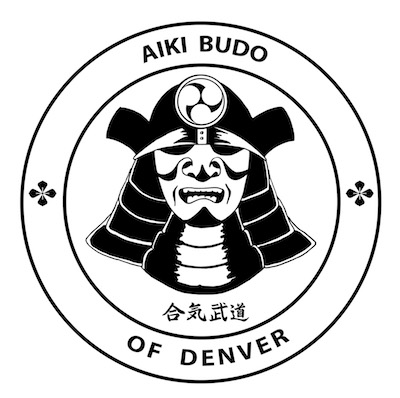
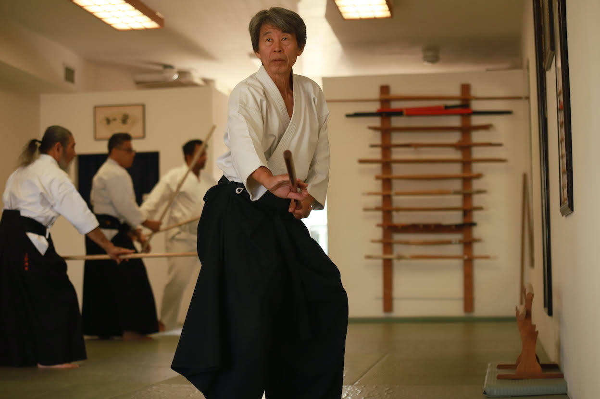

Aiki Budo of Denver invites aikidoka of all affiliations to an Aikido seminar with Haruo Matsuoka Shihan.
Haruo Matsuoka Sensei (7th dan, Shihan) is the founder (Dojocho) of Seishinjuku Dojo. He has over 50 years of aikido training and has been a full time, professional aikido instructor since graduating from college in Japan. Matsuoka has participated in exchange programs with some of the world’s great martial arts masters, including the legendary Dan Inosanto (one of Bruce Lee’s top students and best friends) and Kenji Yamaki (Kyokushin Karate World Champion). Matsuoka was a direct student of Seiseki Abe, 8th dan (1915-2011), one of the closest and highest ranking disciples of the founder of Aikido. His aikido has appeared in numerous feature films and was an instrumental catalyst in bringing awareness of aikido to the United States.